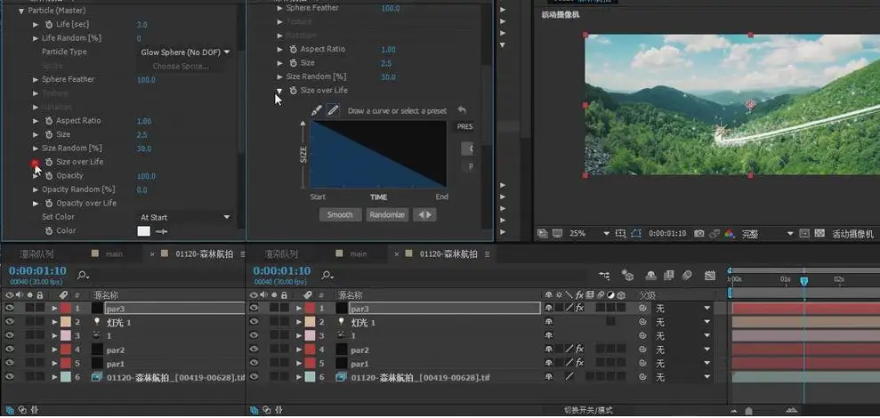
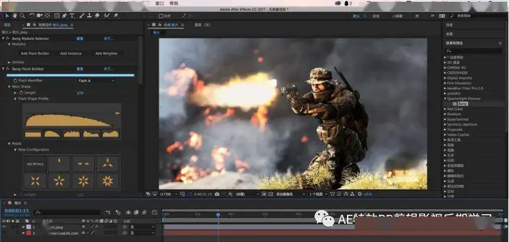

计算机专业
视频剪辑:
年龄段：7岁以上
学历要求：小学学历以上
AE的主要功能有： 1、图形视频处理 Adobe After Effects软件可以帮助您高效、准确地创建大量引人注目的动态图形和令人印象深刻的视觉效果。 通过紧密集成和高度灵活的二维和三维合成，以及数百个预设效果和动画，Adobe为您的电影、视频、DVD和Macromedia Flash作品添加了全新的效果。  2、强大的路径功能 像在纸上绘制草图一样，使用运动草图可以很容易地绘制动画路径或添加动画模糊。 3、强大的特技控制 After Effects使用数百个插件来增强图像效果和动画控制。它可以与其他Adobe软件和三维软件相结合。 当导入photoshop和iiustrator文件时，after effects保留层信息。 高质量视频后效支持4*4到30000*30000像素的分辨率，包括高清电视（HDTV）。 4、多层剪辑 无限层电影技术和静态绘画使后效应无缝合成电影和静态图片。  5、高效的关键帧编辑 在After Effects中，关键帧支持具有所有层属性的动画，After Effects可以自动处理关键帧之间的更改。 6、无与伦比的准确性 后置效果可以精确到六千分之一像素点，并且可以精确定位动画。 高效的渲染效果后效果可以在不同大小上执行多个渲染的组合，或者执行一组任意数量的不同渲染组合。
© 2021----2023 追吻辰星